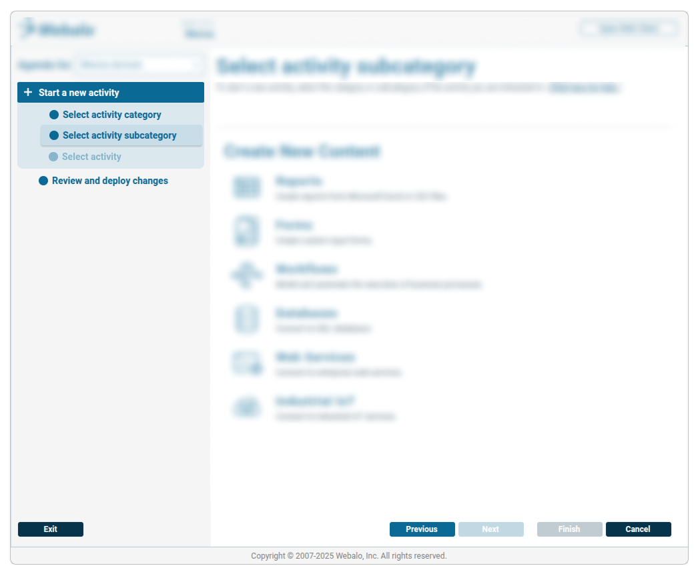
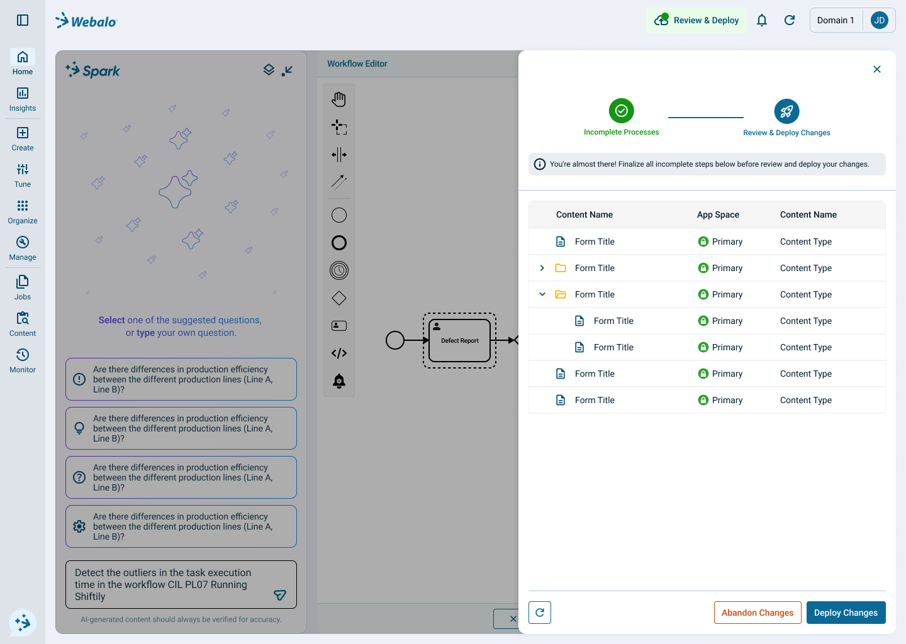

Process Review & Deployment
Project Overview
Redesigned and completed the existing process and deployment logic, with a focus on improving efficiency, introducing quality control checkpoints, and streamlining deployment workflows.
Transformation Process
The process improvement transitioned from an outdated design with incomplete processes and deployment logic listed sequentially into a comprehensive, modern design featuring a sliding-panel wizard UI that clearly presents incomplete processes and deployment logic.
Deployment Process Demonstration
Watch the deployment process transformation showcasing the evolution from the original design to the improved version:
Before - Agenda Redesign
In the old design, the agenda had three sections—incomplete processes, review, and deploy—with the option to start a new activity. This caused confusion when multiple processes were active, and deployment steps were unclear for new activities.

After - Agenda Redesign
Streamlined deployment process with automated steps, improved UI wizard design, and better tracking and documentation of changes. The button has been repositioned to more intuitive locations for easier user access.

After - Review Process
Added review stage with a sliding-panel wizard UI that ensures quality control before deployment, providing clear visibility into process status and progress.

Key Improvements
- Added review stage to ensure quality before deployment
- Implemented clear UI wizard design
- Streamlined deployment process with automated steps
- Enhanced visibility into process status and progress
- Repositioned the button to more intuitive locations, making it easier for users to access it
- Better tracking and documentation of changes